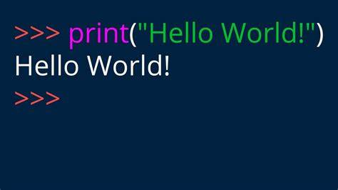

Over the past few months, my homepage served as a placeholder for my porfolio. As I have interest in learning and sharing knowledge, I have chosen to utilize this platform to document my data science journey. And now, here we are.
I want to express my gratitude to Murthadza Aznam, also known as @Thaza_kun on Twitter, for introducing me to the amazing Quarto project. Be sure to explore his homepage as well! Special thanks to the Quarto project for enabling this journey. Setting everything up took just a matter of hours.
As I aspire to become a data scientist and AI engineer, my plan is to consistently publish valuable, insightful, and thought-provoking blog posts. Cheers!